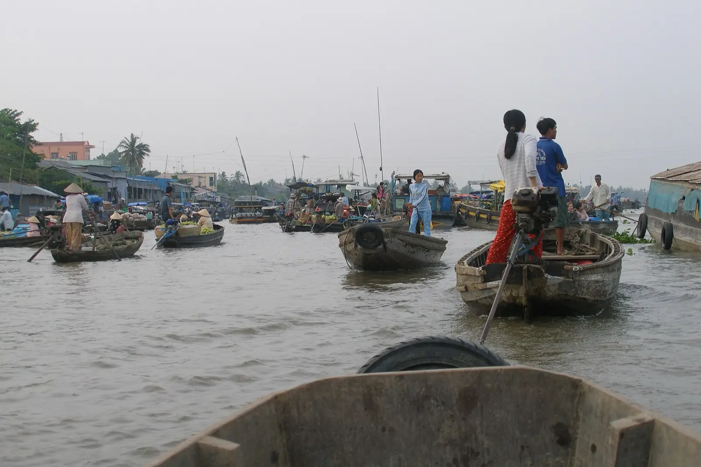
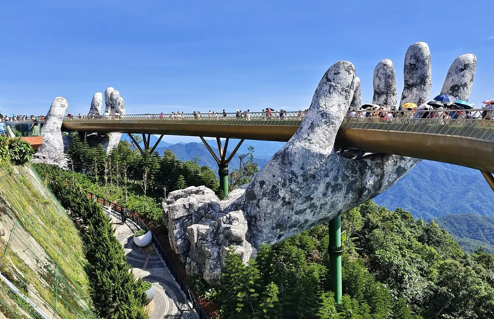
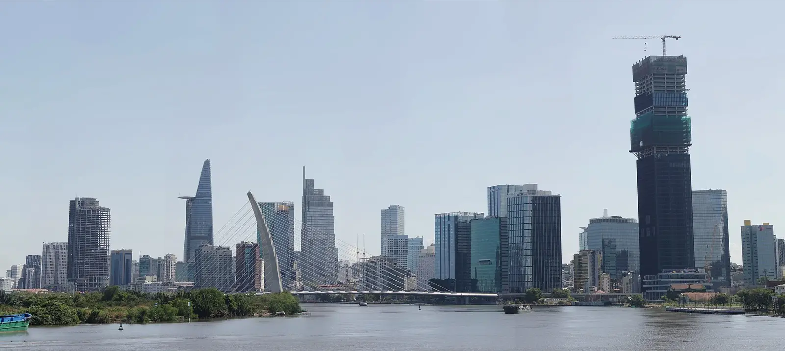
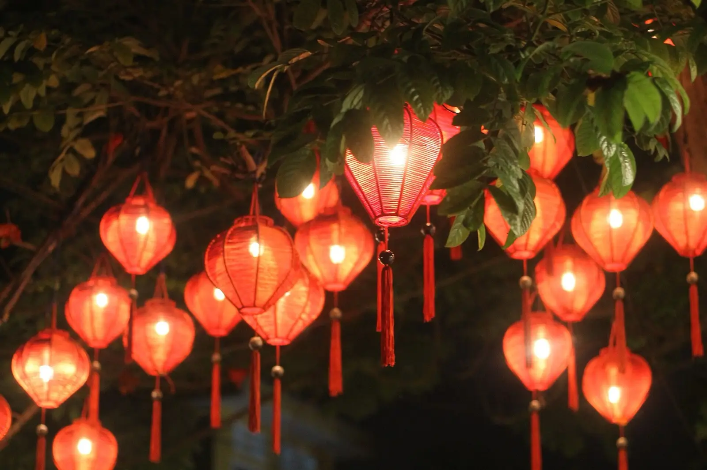
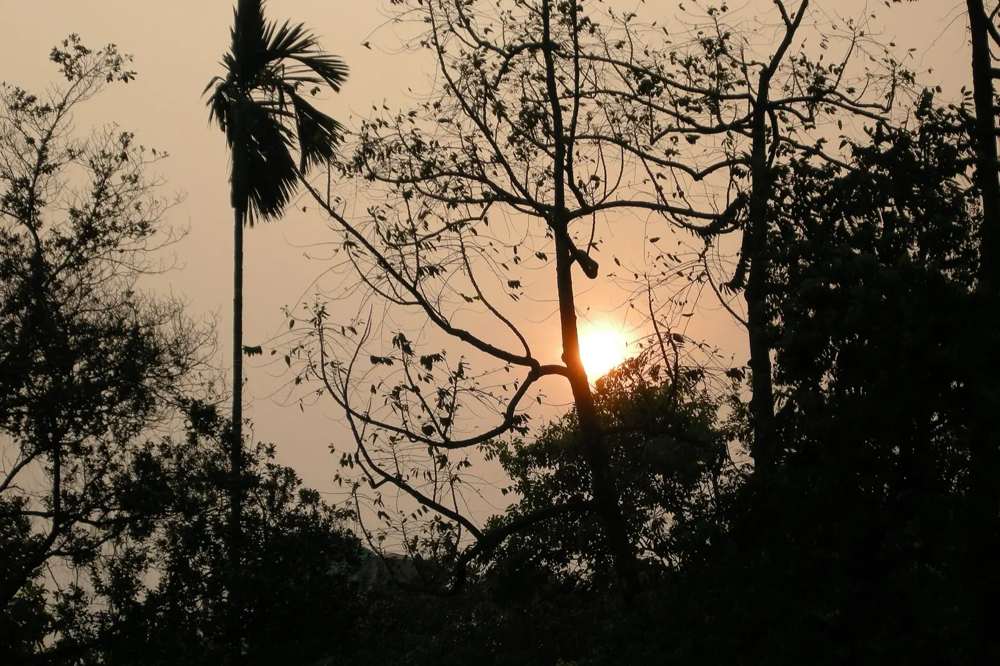
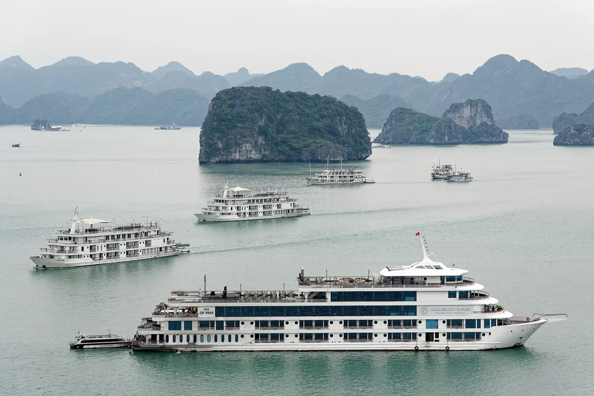

Vietnam Airlines · Economy Lite · 23 kg checked + 10 kg cabin each. Open-jaw: into Saigon, home from Hanoi.
Ten days, gently paced. Private transfers throughout; mornings earned, evenings savoured.
Land at Tan Son Nhat at 16:15, private transfers to the hotel. Shake off the flight with an easy first evening — rooftop drinks over the city and a relaxed welcome dinner. No alarms.
The Cu Chi Tunnels in the morning. Afternoon downtown — War Remnants Museum, Notre-Dame, the Central Post Office, Ben Thanh Market — then dinner and Bui Vien if the energy holds.
A day trip into the delta — sampans through coconut canals, river markets and tropical fruit at Cai Be / Ben Tre. Back to Saigon for the evening. (Swap for a spa-and-shopping day if the group prefers.)

Morning at leisure, then fly Ho Chi Minh City → Da Nang and transfer to Hoi An. Check in, then a riverfront dinner under the lanterns.
The Ancient Town, the Japanese Bridge, the tailors (order early — final fitting before you fly north), and An Bang beach in the afternoon. After dark: a lantern boat ride and floating candles on the Thu Bon.
Ba Na Hills & the Golden Bridge plus the Marble Mountains — or a hands-on Vietnamese cooking class and a countryside bike tour. Spa and pool to close it out.

Final tailor fittings, then fly Da Nang → Hanoi. Settle into the Metropole, then a slow loop of the Old Quarter, egg coffee at Giảng, and a long Hanoi dinner.
Private coach to the coast, then the luxury overnight cruise. Kayaking through the karsts, a hidden cave, a swim, sunset on the sundeck, a seafood dinner, and night squid-fishing.
Sunrise tai-chi and brunch as you cruise back. Disembark midday and drive to Hanoi for the afternoon — Hoan Kiem Lake, the Temple of Literature, a final street-food crawl, then a water-puppet show.
A leisurely Hanoi morning and last-minute shopping, then a private transfer to Noi Bai for the 16:00 flight home. Bags full of tailored suits, lantern photos, and a group chat that won't shut up for months.
Hold 4–5 rooms per property and a 5-cabin block on the cruise early — luxury inventory is thin in September.




The small print that keeps nine people moving smoothly.
Most nationalities need a Vietnam e-visa — apply online 2–4 weeks out, all nine together.
Two legs to book as a group: SGN→DAD (Sep 21) and DAD→HAN (Sep 24). Vietnam Airlines / Bamboo.
VND cash for markets & street food; cards at hotels and restaurants. Carry small notes.
~28–33°C, humid, short afternoon showers likely in the centre. Light layers + a rain shell.
Grab app for taxis in cities; pre-arranged private vans for the group on transfer days.
Breathable clothing, good sandals, a temple-friendly cover-up, and room for tailored finds.
Indicative: luxury hotels (twin-share), the overnight cruise, internal flights, private transfers, guides and most meals. Excludes international flights — refine once rooms are locked.